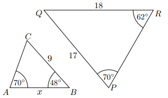

Przekątne trapezu dzielą się proporcjonalnie, więc ABEjest podobnyCDE.
Trójkąty ACD i BCD mają równe pola.
Odp.: P,P.
Zad. 6
(czerwiec 2023 - zad. 24)
Pole trójkąta równobocznego \(T_1\) to \((1,5)^2 \cdot \frac{\sqrt{3}}{4}\). Pole \(T_2\) to \((4,5)^2 \cdot \frac{\sqrt{3}}{4}\).
Trójkąt \(T_2\) jest podobny do \(T_1\) w skali:
ponieważ
Stosunek pól = \(\frac{(4,5)^2}{(1,5)^2} = 9\).
Stosunek liniowy = 3.
Odp.: A,2.
Zad. 7
(marzec 2021 - zad. 17)
W trójkącie równobocznym ABC poprowadzono prostą DE przez punkt przecięcia wysokości, równoległą do AB.
Stosunek pola \(\triangle ABC\) do pola \(\triangle CDE\) wynosi
Wysokość została podzielona w stosunku 1:2.
Stosunek pól = \(9:4\).
Odp.: A.
Zad. 8
(maj 2019 - zad. 15)
Dwa okręgi o promieniach 5 i 3, odległość środków = 16. Prosta AB styczna w A i B przecina OP w K.
\(|OK|\) wynosi
Korzystamy z twierdzenia o odcinku stycznych i proporcji.
Obliczamy \(|OK| = 10\).
Odp.: C.
Zad. 9
(maj 2018 - zad. 15)
Trójkąt o bokach \(2\sqrt{5}, 3\sqrt{5}, 4\sqrt{5}\). Podobny jest do trójkąta o bokach
Stosunek boków = 2:3:4.
Boki 10,15,20 są w tym stosunku.
Odp.: A.
Zad. 10
(sierpień 2017 - zad. 15)
W trójkącie ABC, DE || AB, |AE|=|DE|=4, |AB|=6.
Odcinek CE ma długość
Z podobieństwa: CE=8.
Odp.: C.
Zad. 11
(czerwiec 2017 - zad. 20)
Trójkąt \(ABC\) jest podobny do trójkąta \(A'B'C'\) w skali \(\tfrac{5}{2}\). Obwody też w skali \(\tfrac{5}{2}\). Stosunek pól = ?
Stosunek pól = kwadrat skali = \((5/2)^2=25/4\).
Odp.: D.
Zad. 12
(maj 2016 - zad. 16)
Trójkąty ABC i PQR są podobne.

Bok AB ma długość
Ze skali podobieństwa wychodzi AB=8,5.
Odp.: B.
Zad. 13
(sierpień 2014 - zad. 18)
Odcinki BC i DE równoległe, |AE|=4, |DE|=3. D jest środkiem AB.
Długość BC to:
Z podobieństwa: BC=6.
Odp.: B.
Zad. 14
(czerwiec 2014 - zad. 20)
W trójkącie EFG bok EF = 21. Prosta || EF przecina EG i FG w H, I.